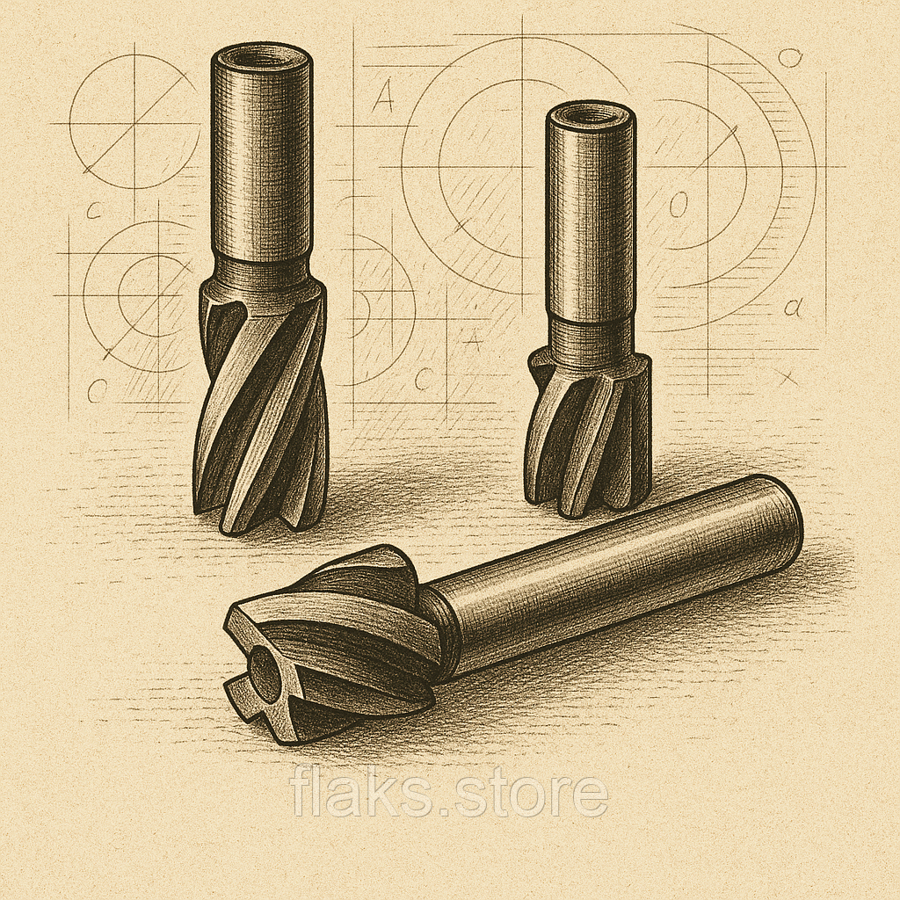

Фрези кінцевіФрезы концевые
Фреза шпоночная ц\х ф 5.8 55х15 ВИЗ Р6М5 №9Фреза шпоночная ц\х ф 5.8 55х15 ВИЗ Р6М5 №9
ОписОписание
Фреза шпоночная ц\х ф 5.8 55х15 ВИЗ Р6М5 №9 — професійний металорізальний інструмент для фрезерування пазів, уступів, контурів і кишень. Основні параметри: діаметр Ø 5.8 мм, розмір 55×15 мм та циліндричний хвостовик. Виготовлено з матеріалу швидкорізальна сталь Р6М5, що забезпечує стійкість різальної кромки при обробці конструкційних і легованих сталей, чавуну та кольорових металів. Виробник: ВИЗ. Інструмент перевірений і готовий до відвантаження. В наявності 200 шт. на складі у Харкові. Ціна 45 грн без ПДВ. Опт і роздріб, відправлення по всій Україні. Замовлення від 2 000 грн.Фреза шпоночная ц\х ф 5.8 55х15 ВИЗ Р6М5 №9 — профессиональный металлорежущий инструмент для фрезерования пазов, уступов, контуров и карманов. Основные параметры: диаметр Ø 5.8 мм, размер 55×15 мм и цилиндрический хвостовик. Изготовлен из материала быстрорежущая сталь Р6М5, что обеспечивает стойкость режущей кромки при обработке конструкционных и легированных сталей, чугуна и цветных металлов. Производитель: ВИЗ. Инструмент проверен и готов к отгрузке. В наличии 200 шт. на складе в Харькове. Цена 45 грн без НДС. Опт и розница, отправка по всей Украине. Заказ от 2 000 грн.
ХарактеристикиХарактеристики
| Тип інструментуТип инструмента | Фреза кінцеваФреза концевая |
|---|---|
| КатегоріяКатегория | Фрези кінцевіФрезы концевые |
| Діаметр ØДиаметр Ø | 5.8 мм5.8 мм |
| РозміриРазмеры | 55×15 мм55×15 мм |
| МатеріалМатериал | Р6М5Р6М5 |
| ХвостовикХвостовик | циліндричнийцилиндрический |
| ВиробникПроизводитель | ВИЗВИЗ |
| СтанСостояние | новийновый |
| Код товаруКод товара | FLK-07707FLK-07707 |
| НаявністьНаличие | 200 шт.200 шт. |